抖动会转化为幅度误差
输入频率越高，同样的时间抖动造成的采样误差越明显，系统动态范围会被时钟噪声限制。
问题分析
高速采集子卡的难点集中在时钟质量、通道同步、数据吞吐、板级布局、电源噪声和高速信号完整性。 本页按问题展开分析，并给出对应的设计方案。
ADC 和 DAC 都依赖采样时钟工作。时钟边沿如果发生随机偏移，采样点就会偏离理想位置，带来相位噪声、信噪比下降和输出杂散增大。 对高速中频信号来说，时钟质量直接决定转换质量。
输入频率越高，同样的时间抖动造成的采样误差越明显，系统动态范围会被时钟噪声限制。
采用低噪声 JESD204B 时钟芯片。第一环清理外部参考时钟，第二环产生并分配低抖动器件时钟和 SYSREF，同步送往 ADC、DAC 与 FPGA。
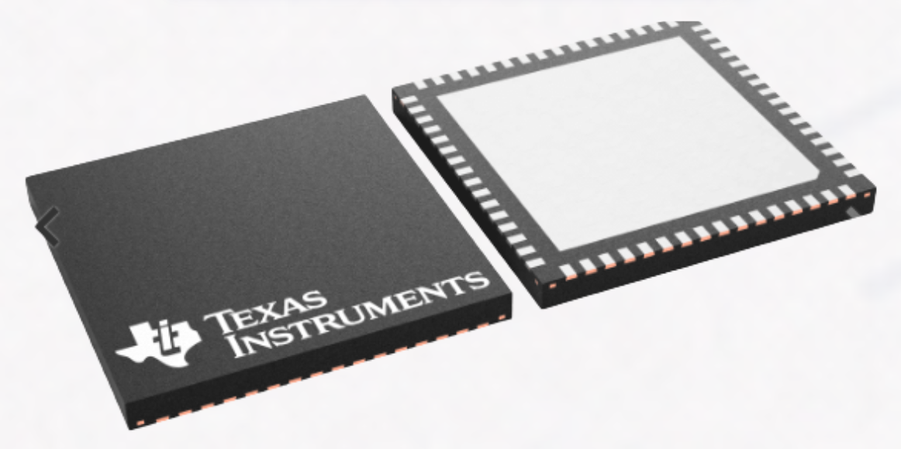
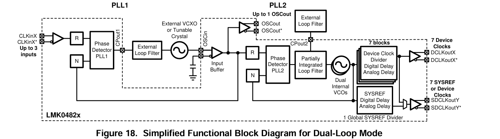
多路 AD/DA 通道需要在同一时间基准下工作。若高速数据线长度差过大，信号到达时间不同，会造成通道间偏斜，影响多通道采样和回放的一致性。
走线长度、层间过孔和绕线路径都会影响传播延时，通道越多，同步约束越重要。
在 PCB 布局中对关键 AD/DA 数据链路进行等长控制，通过蛇形走线补偿长度差，保证各路信号同步到达。
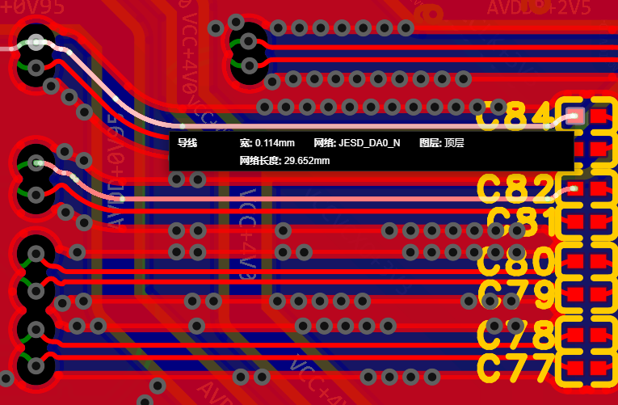
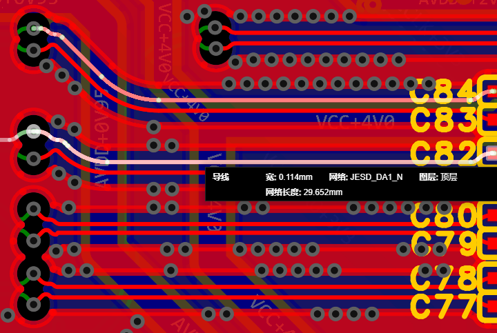
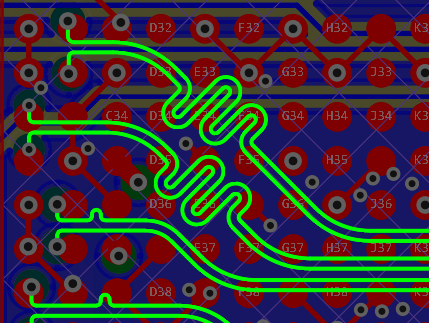
高速 ADC 和 DAC 会产生大量采样数据，传统并行接口需要大量引脚和严格时序约束。JESD204B 使用高速串行 lane 传输数据，可以减少引脚数量，同时提升高速数据链路的可扩展性。
通道数增加后，并行总线会带来引脚数量、布线空间和时序收敛压力。
AD/DA 与 FPGA 之间采用 JESD204B 协议，各 8 条 lane 承担高速串行通信，兼顾带宽、同步和布局可实现性。


在板卡尺寸不变的条件下，通道数增加会压缩器件摆放、走线扇出、电源分配和高速链路空间。布局优化需要同时兼顾模块分区、走线长度、层间分配和可制造性。
新增 DA 通道后，接口、供电、时钟和高速线数量同步增加，布线密度显著提升。
在原板卡尺寸基础上优化器件位置和走线层分配，实现 4 路 AD、4 路 DA 的结构升级。
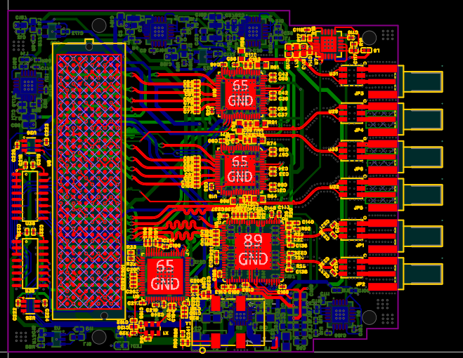
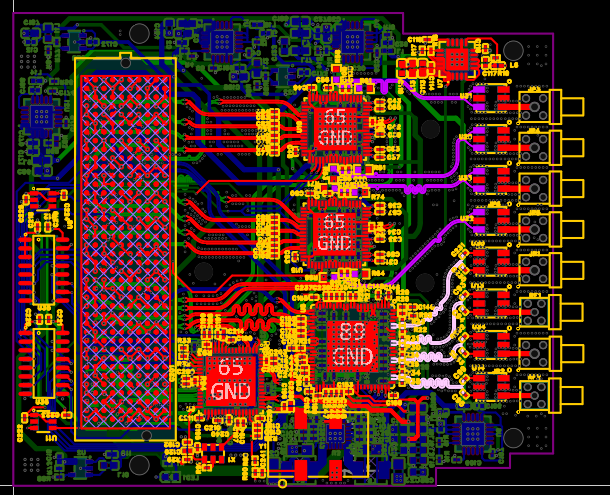
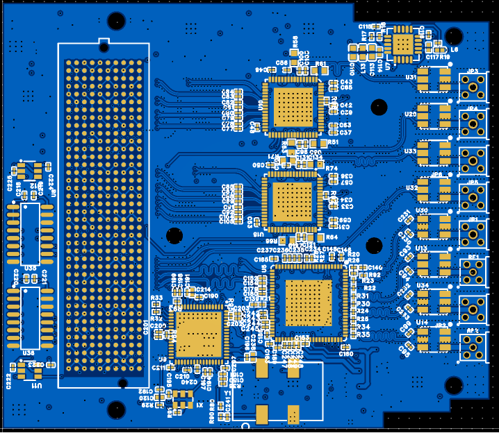
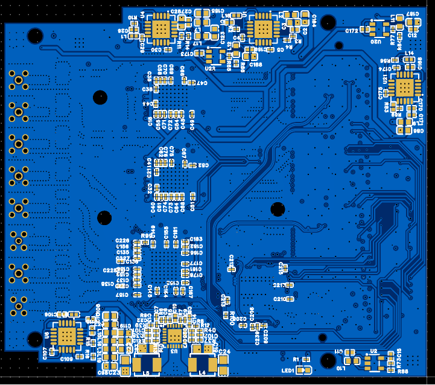
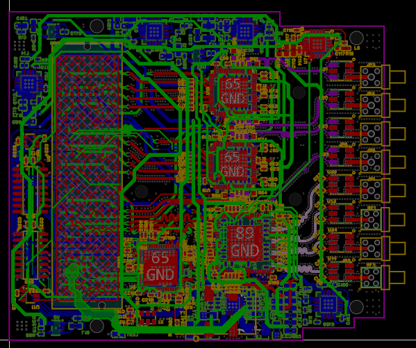
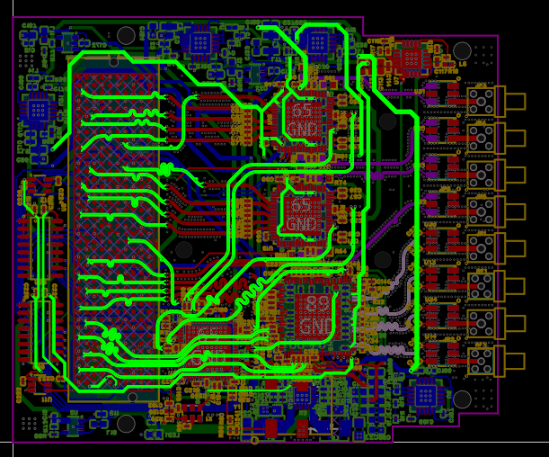
高速转换芯片、时钟芯片和高速接口对电源噪声都很敏感。电源纹波可能通过模拟电源、数字电源或时钟电源进入系统，最终表现为采样噪声、时钟不稳定或链路状态异常。
开关电源纹波、瞬态电流和芯片附近的高频噪声都会影响模拟转换和时钟质量。
电源设计采用多路稳压、磁珠隔离、旁路电容和芯片电源脚就近去耦，将低频纹波和高频噪声分层处理。

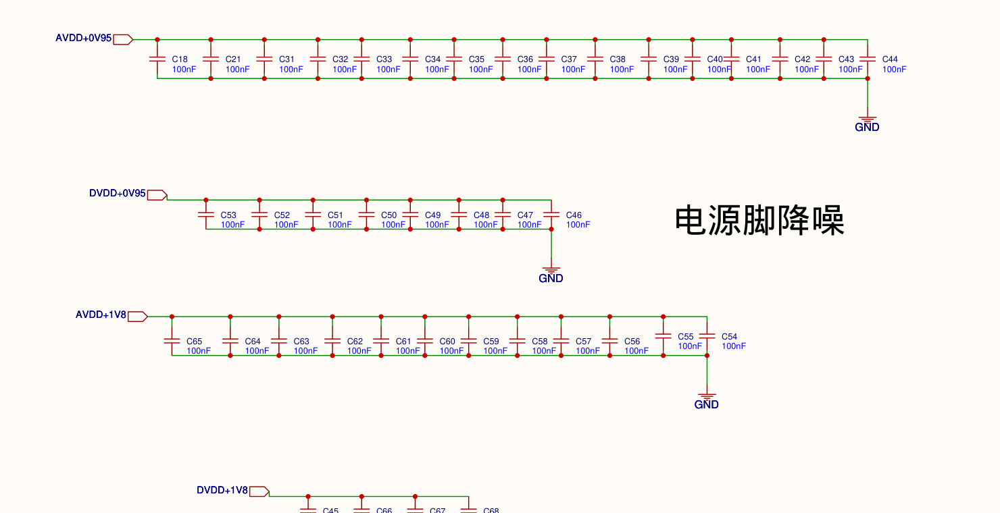
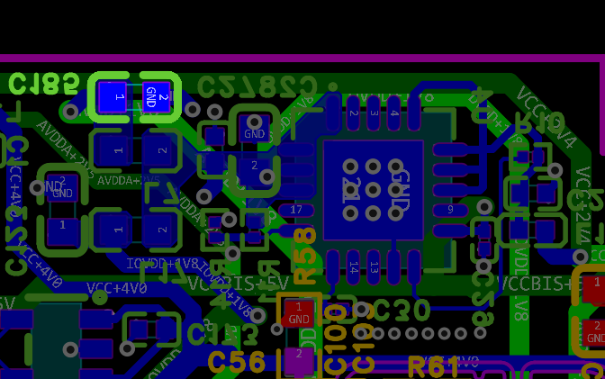
高速差分线对阻抗连续性、参考平面和串扰控制要求很高。若走线附近参考地不连续，或者高速线之间缺少隔离，容易引起反射、串扰和链路裕量下降。
过孔、层切换和参考平面破碎都会破坏信号回流路径，影响高速链路稳定性。
关键高速线周围布置包地孔，并使用连续参考地层控制回流路径，降低串扰并改善链路完整性。
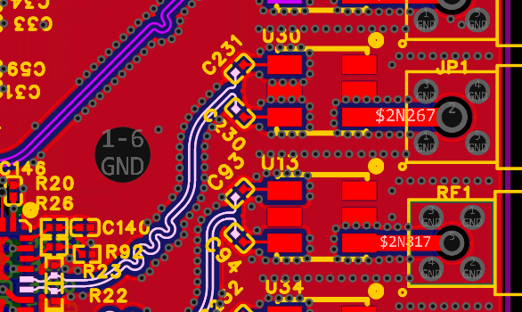
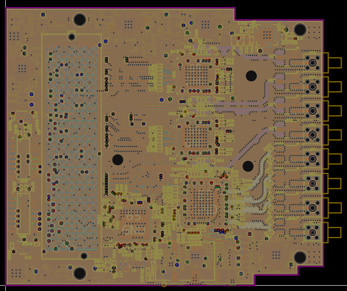
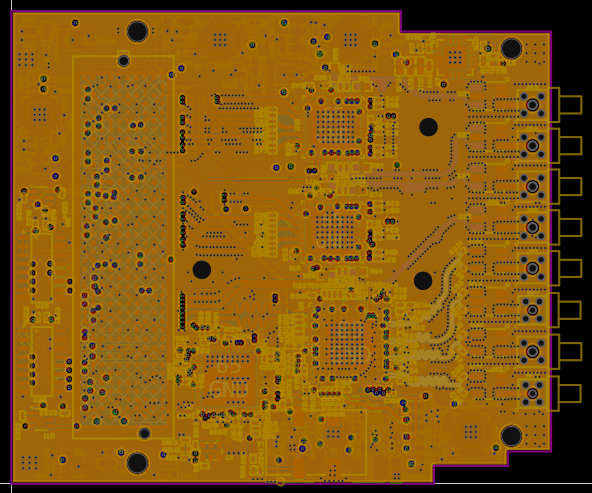